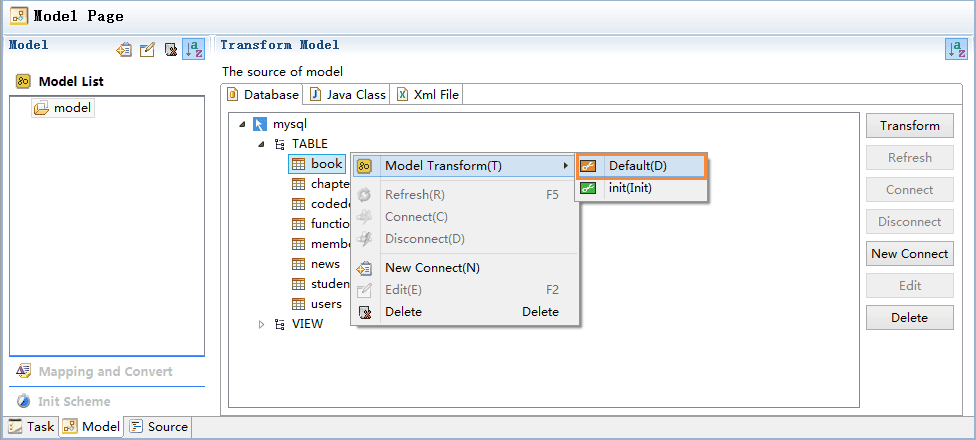

Jmr可以通过读取数据库中的表和视图建立对应的模型。
整个读取过程只需做2步： 1.配置数据库连接，并连接数据库。 2.读取表或者视图转换成模型。
首先，打开jmr文件,切换模型页,点击菜单上的新建按钮，或者在模型列表中右键，新建组。
输入组名，例如：model。
新建完成后，右边副页出现数据来源配置，目前支持从数据库、java类、xml文件生成模型。
PS：关于模型组：模型组是一组模型的集合，它可以包含从各种数据源获取的模型。
在任务配置中，可以设置模型组，模板可以获取模型组中的数据。
在模型页中，小伙伴们可以记录数据库的信息，并通过它查询数据库中的表和视图，转化成模型。
选中任意的模型组，在从属页面中，选择“数据库”,右键菜单或者右侧菜单“新建连接”。

在数据库配置页面中，配置数据库连接信息。
需要注意几点： 1.可选的数据库包含了大部分主流数据库，如果没有，请选择Other。 2.一般数据库厂家都会提供jdbc驱动包，正常只有一个，但sqlserver2000包含3个，请都加入。 3.导入的驱动包建议放在项目路径下。 4.根据jdbc的协议，classname可能有多个，加入完驱动包后，会自动列出classname，请选择合适的使用。 5.建议测试下数据库连接，如果有错误会提示，错误一般是配置信息错误，数据库未安装或者服务没启动。
配置完毕后，右键菜单或者右侧菜单点击“连接”。

连接成功后，会显示表和视图的结构；如果数据库变动了，右键菜单或者右侧菜单点击“刷新”。

模型是jmr的核心资产，它代表了数据源的信息，我们把它传递给模板生成代码。 我们现在开始就要把表和视图的信息，转换成jmr可以理解和扩展的模型。
选中表或者视图，右键菜单-->模型转换-->默认转换。

生成了模型book，这个模型是表或者视图的结构信息。 默认转换生成的是基础模型，我们一般会在此基础上扩展模型。
选中表或者视图，右键菜单-->模型转换-->默认转换。
生成了模型book，这个模型是表或者视图的结构信息。 默认转换生成的是基础模型，我们一般会在此基础上扩展模型。
也可以通过预设方案来转换模型，预设方案可以预先设置好需要扩展的结构。 在转换时除了默认结构的转换，也会同时进行扩展结构的转换。
关于预设方案请阅读：
预设方案
使用预设方案生成模型